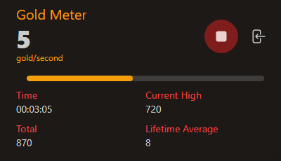
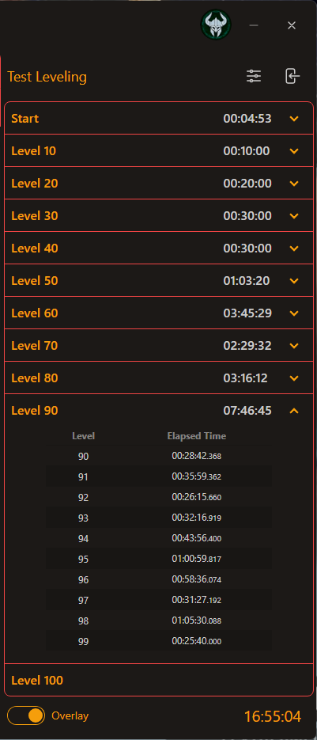
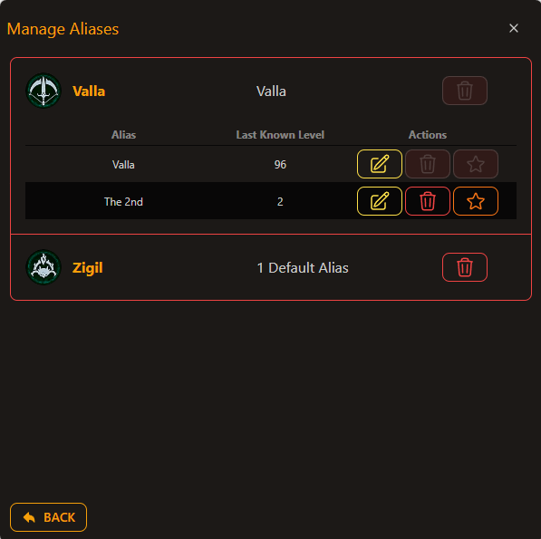

Diablo Accessories
Elevate your Diablo experience with real-time statistics on Gold, Experience, and Speed Leveling! Designed for true enthusiasts, dIVa helps
you discover the most resource-efficient quests, dungeons, and playstyles. Enjoy in-game overlays with up-to-the-minute updates, ensuring
you maximize your efficiency while slaying demons. Gear up and conquer Sanctuary with dIVa!
Upcoming Features & Preview
Discover the exciting new features and improvements coming in September 2024 with dIVa v0.66.6!
New Features
-
Multi-Game Support: dIVa is expanding beyond Diablo IV!
With this upcoming update, the application will support multiple games, starting with Diablo II: Resurrected.
This enhancement allows players to track and optimize their gameplay experience across different games seamlessly.
Check out the Diablo II: Resurrected Tutorial -
New "Characters" Feature: The management of character aliases has been improved with a dedicated "Characters"
feature.
This feature opens in its own window, providing a streamlined interface for managing your characters and updating character-specific data for each game more efficiently.
Now, you can also create new characters directly from this screen. -
Leveling Overlay: Introducing the new "Leveling Overlay" feature, an in-game overlay that provides a quick summary of
your current leveling milestones.
This overlay also includes controls for starting and stopping the leveling process, giving you a handy, in-game remote control for your leveling progress. -
Offline Mode: A new "Offline Mode" feature has been introduced, allowing you to manage Characters and the Speed
Leveling Tracker even when Overwolf game events are unavailable!
In the "Characters" screen, after adding a Character, it will automatically be marked as "offline." Previously, if the events were down, tracking your leveling progress wasn't possible.
Now, with Offline Mode, we've introduced the ability to manually complete milestones every 10 levels, providing a balanced solution that allows you to keep track of your progress without needing to click for every level.
Improvements
-
Menu Cleanup and Consolidation: The application menu has been streamlined and consolidated to better support the new
"Characters" feature.
This update not only enhances the usability of the application but also aligns the menu design with the overall aesthetics of the application.
Preview Screenshots
Here are some exclusive screenshots of the upcoming features.


Tutorial (v0.55.0)
Desktop
Screenshot of the Desktop window.


Functionality
- Gold Meter: This meter can run either in-game or as part of the desktop window.
- Experience Meter: Similar to the Gold Meter, this meter can run either in-game or as part of the desktop window.
- Speed Leveling Tracker: Monitors the speed at which your character levels up. Displays time for every Milestone!
-
Settings:
- Icon: Displays the current character's class.
- Hover: Shows the current character's name and level when hovered over.
Meters
Screenshots of the Gold and Experience Meters



Functionality
- Total Resource: Displays your current gold or experience collected in the session.
- Resource Per Second: Displays current gold or experience per second.
- Total Time: Shows the total time the meter has been running.
- Session High: Displays the highest amount of gold or experience gained in a session.
- Lifetime Average: Displays the lifetime average gold or experience per second.
- In-Game Overlay: Shows a limited subset of this information when used as an in-game overlay.
Speed Leveling Tracker
Screenshot of the Speed Leveling Tracker window.
Functionality
-
Milestones: Displays milestones along your leveling journey.
- Total Time: The time taken within the milestone; accumulative of all the levels.
- Level Breakdown: Shows the elapsed time for each level within the milestone.
- Elapsed Time: Displays the elapsed time for each level individually.
- Progress Tracking: Tracks the time taken to reach each milestone and displays it in an expandable list.
- Control Button: Includes a play/pause button to start or stop the timer.
Settings
Screenshot of the Settings window.

Functionality
-
Configuration: Adjust application settings.
- Leveling Tracker Auto-start: Automatically starts the Speed Leveling Tracker when a character logs in.
- Gold Overlay: Enables the Gold Meter as an in-game overlay.
- Experience Overlay: Enables the Experience Meter as an in-game overlay.
-
Reset Data: Clear accumulated data in the application.
- Gold: Resets all gold-related data.
- Experience: Resets all experience-related data.
- Delete All: Deletes all data associated with the application, including settings, resource data per character, leveling data per character, and all characters and aliases.
-
Manage Aliases: Organize your character's aliases.
- Alias: User-assigned Alias to help distinguish between Character's of the same attributes
-
Manage Subscription: Update subscription details.
- Edit: Modify subscription settings and details.
Manage Aliases
Screenshot of the Aliases window.
Functionality
- Class Icon: Displays the character's class.
- Character Name: Displays the character's name.
- Favorite:This auto-selects the alias when character of same attributes logs in
- Remove: Delete the Character and all its data
The Collapsable Information
- Alias: User-assigned Alias to help distinguish between Character's of the same attributes
- Level: Displays the Alias' last known level.
-
Actions: Perform actions on the Alias.
- Edit: Update the Alias
- Remove: Delete the Alias
- Mark Alias as Favorite: Sets Alias as Favorite